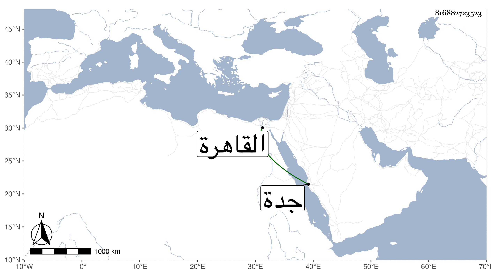

0902Sakhawi.DawLamic.ITO20230111-ara1.EIS1600.816882723523
Biography ID: 816882723523
270
محمد بن يس بن محمد بن إبرهيم الشمس أبو عبد الله بن الشيخ الشهير وهو ابن أخت الشرفي الأنصاري . ولد في رجب سنة اثنتين وأربعين وثمانمائة بالقاهرة ونشأ في كنف أبويه فحفظ القرآن والعمدة والمنهاج وجمع الجوامع وألفية النحو وعرض على جماعة وأخذ عن النور الوراق وخلد المنوفي في العربية وعن السنهوري فيها والجاربردي وبعض المختصر وعن النجم بن قاضي عجلون الألفية تقسيما وغيرها ولازم الفخر المقسي في تقسيم الفقه وغيره بل تدرب بأبيه وقتا وسمع على جماعة كأم هانئ الهورينية وغيرها وحج وأقبل على التجارة فتميز فيها وصار بيته موردا للغرباء منهم كابني الطاهر وابن عيسى القاري لمزيد عقله وأدبه وتودده وعادت عليه ثمرة ذلك بل رام السلطان جعله متكلما في جدة لاعتقاده فيه الإكثار سيما من جهة خاله فما تخلص إلا ببذل زيادة على عشرة آلاف دينار ويقال أن حاله تضعضع بذلك وفيه كلام وملام .
